25+ gatunków
15 jadalnych
10 trujących / śmiertelnych
8 par mylnych
📸 lokalne zdjęcia z Wikimedia CC
jadalny bezpieczny po prawidłowej obróbce
warunkowo tylko po gotowaniu / w małych ilościach
trujący ⚠ powoduje zatrucie
☠ śmiertelny może zabić nawet w małej dawce
⚠️ Zasady bezpiecznego grzybobrania
- Zbieraj tylko to, co 100% rozpoznajesz. Nawet doświadczeni grzybiarze popełniają błędy.
- Jeden muchomor sromotnikowy = śmierć. Nie ma antidotum. Uszkodzenie wątroby jest nieodwracalne.
- Nie zbieraj z dróg, zakładów przemysłowych, cmentarzy — grzyby kumulują metale ciężkie i pestycydy.
- Koszyk wiklinowy, nie foliowy — grzyby w foliówce fermentują w ciągu godzin.
- Odcinaj nożem, nie wyrywaj — zachowujesz grzybnię i kolejne plony.
- Wątpliwy grzyb → zostaw w lesie. Zrób zdjęcie i skonsultuj z mycologiem lub sanepid.
- Dzieci i grzyby — nigdy nie dawaj dzieciom grzybów leśnych bez weryfikacji eksperta.
Grzyby jadalne
Grzyby powszechnie zbierane w Polsce, bezpieczne gdy prawidłowo zidentyfikowane. Każdy z nich ma niebezpieczny mylnik — czytaj uważnie opisy.
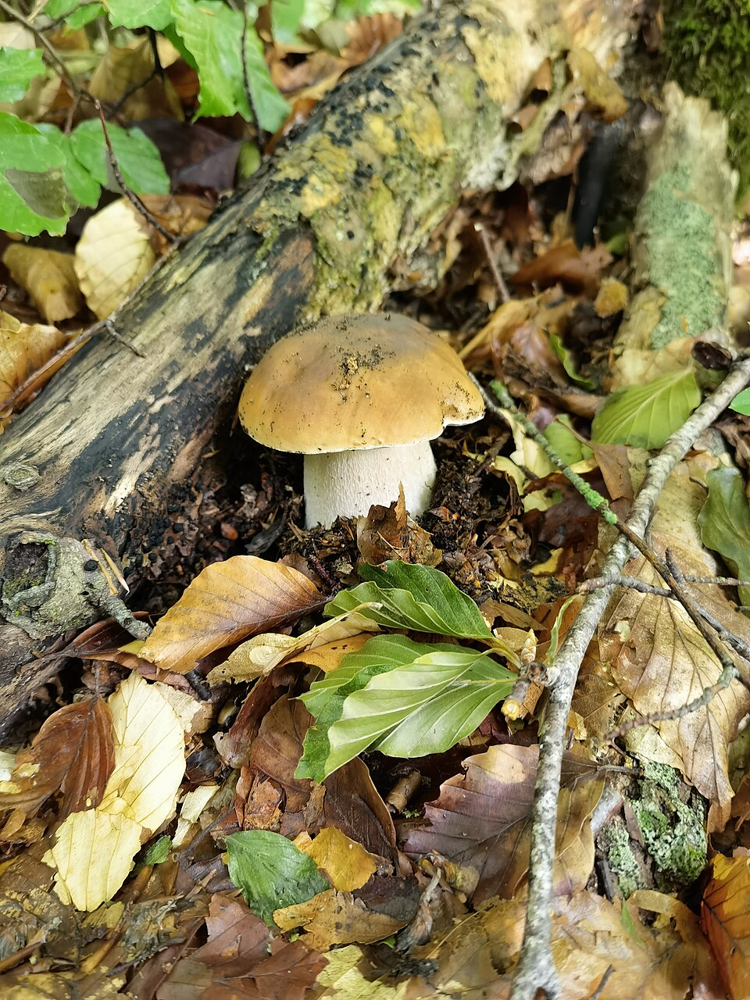
JADALNY
Borowik szlachetny (prawdziwek)
Boletus edulis · rodzina borowikowate
jadalny ★★★król grzybów
| Kapelusz | 5–25 cm, brązowy do ciemnobrązowego, wypukły |
| Rurki | Białe→żółte→oliwkowe, drobne pory, NIE sinieje |
| Trzon | Masywny, bulwiasty, biała siateczka na jasnym tle |
| Zapach | Orzechowy, intensywny, przyjemny |
| Smak | Łagodny, słodkawy |
| Siedlisko | Lasy iglaste (sosna, świerk), dębowe, pod bukami |
| Sezon | VII – XI (szczyt: IX–X) |
💡 Ciasto (miąższ) NIE sinieje po przecięciu — kluczowa cecha. Odcięty kapelusz — aromat orzechowy.
⚠ Mylnik: Goryczak żółciowy (Tylopilus felleus) — sinieje, gorzki smak, różowe rurki. Niejadalny, ale nie trujący.
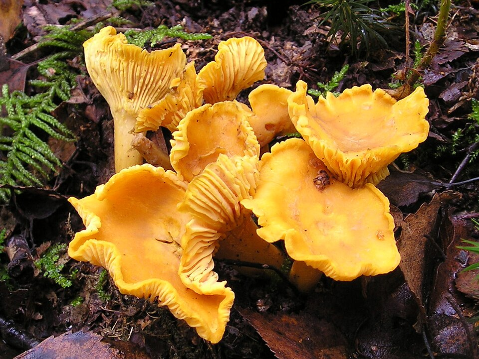
JADALNY
Kurka (pieprznik jadalny)
Cantharellus cibarius · rodzina pieprznikowate
jadalny ★★★
| Kapelusz | 3–12 cm, żółty do pomarańczowego, falisto wklęsły |
| Blaszki | FAŁDKI (nie blaszki!) — rozwidlone, zbiegające na trzon |
| Trzon | Żółty, pełny, zwężający się ku dołowi |
| Zapach | Owocowy, morelowy, charakterystyczny |
| Siedlisko | Lasy liściaste i mieszane, pod dębami i bukami |
| Sezon | VI – X |
💡 Kluczowe: fałdki (nie blaszki), żółty miąższ, owocowy zapach. Ciągliwe, nie łamliwe.
⚠ Mylnik: Lisówka pomarańczowa (Omphalotus olearius) — rośnie w kępach przy pniu, ma prawdziwe blaszki, świeci w ciemności. TRUJĄCA.
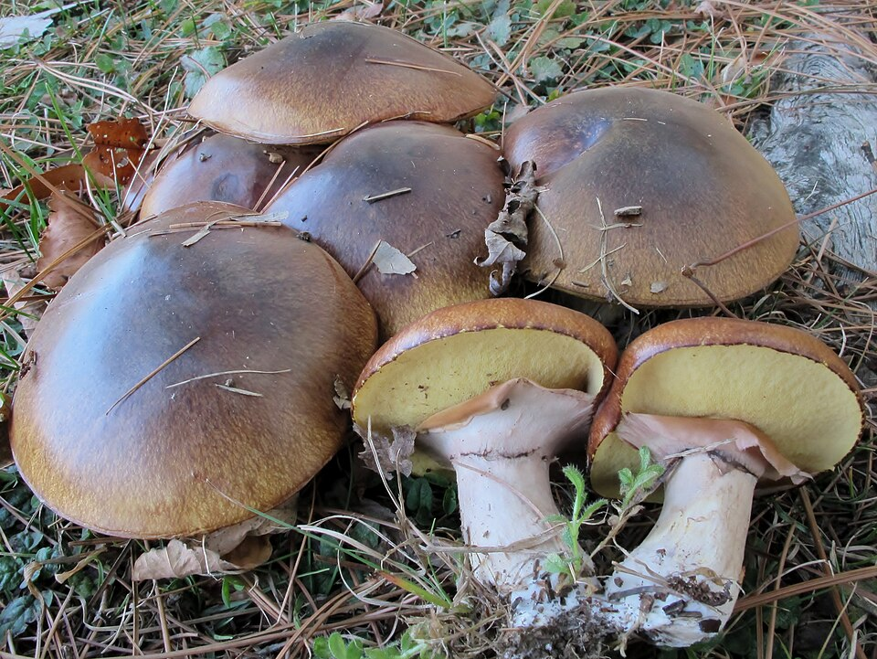
JADALNY
Maślak zwyczajny
Suillus luteus · rodzina maślakowate
jadalny ★★obierać skórkę
| Kapelusz | 4–12 cm, czekoladowobrązowy, śluzowy (mokry) |
| Rurki | Żółte, drobne pory, blaszkowaty pierścień na trzonie |
| Trzon | Żółty, z fioletowym pierścieniem! |
| Siedlisko | Tylko pod sosnami, często na skraju lasu |
| Sezon | VIII – XI |
💡 Obowiązkowo ściągaj śluzową skórkę z kapelusza — zawiera substancje powodujące biegunki u wrażliwych osób.
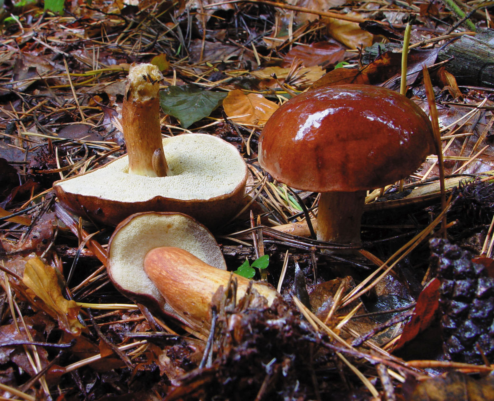
JADALNY
Podgrzybek brunatny (zajączek)
Imleria badia · rodzina borowikowate
jadalny ★★★pospolity
| Kapelusz | 5–15 cm, brązowy, aksamitny (suchy) |
| Rurki | Żółte→sinieją po przecięciu! |
| Trzon | Brunatny, walcowaty, bez siateczki |
| Siedlisko | Lasy iglaste — sosna, świerk |
| Sezon | VII – XI |
💡 Sinieje mocno po przecięciu — normalnie. Jedna z najbardziej pospolitych jadalnych grzybów w Polsce.
⚠ Mylnik: Borowik szatański — czerwone pory, sinieje, trujący. Podgrzybek ma żółte pory!
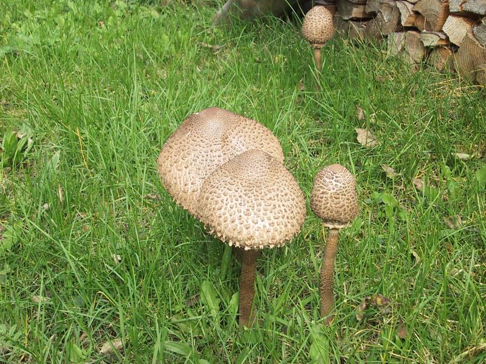
JADALNY
Czubajka kania
Macrolepiota procera · rodzina pieczarkowate
jadalny ★★★
| Kapelusz | 10–30 cm! Brązowa łuska na białym tle, guzek w centrum |
| Blaszki | Białe, wolne (nie łączą się z trzonem) |
| Trzon | Wysoki (20–40 cm), węziasty, ruchomy pierścień |
| Zapach | Orzechowy, delikatny |
| Siedlisko | Skraje lasów, łąki, miedze, parki |
| Sezon | VII – X |
💡 Kapelusz smażony jak kotlet — panierowany i na maśle. Trzon zbyt twardy do jedzenia. Miąższ NIE zmienia koloru.
⚠ Mylnik: Czubajka cuchnąca (M. venenata) — mniejsza, zmienia kolor miąższu na czerwony, nieprzyjemny zapach. TRUJĄCA.
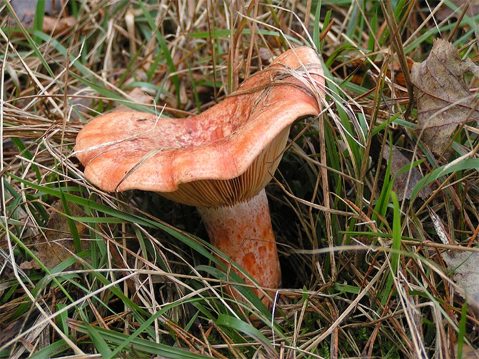
JADALNY
Rydz (mleczaj rydz)
Lactarius deliciosus · rodzina gołąbkowate
jadalny ★★★
| Kapelusz | 5–15 cm, pomarańczowy z ciemniejszymi koncentrycznymi strefami |
| Blaszki | Pomarańczowe, gęste, kruchliwe, pod naciskiem zielenieją |
| Mleczko | Pomarańczowe! (kluczowa cecha), zieleńieje na powietrzu |
| Smak | Łagodny do lekko gorzkawego |
| Siedlisko | Pod sosnami i świerkami |
| Sezon | VIII – X |
💡 Pomarańczowe mleczko to znak rozpoznawczy. Wyborny smażony na maśle lub marynowany. Po ugotowaniu traci kolor — wygląda mniej apetycznie, ale nadal smaczny.
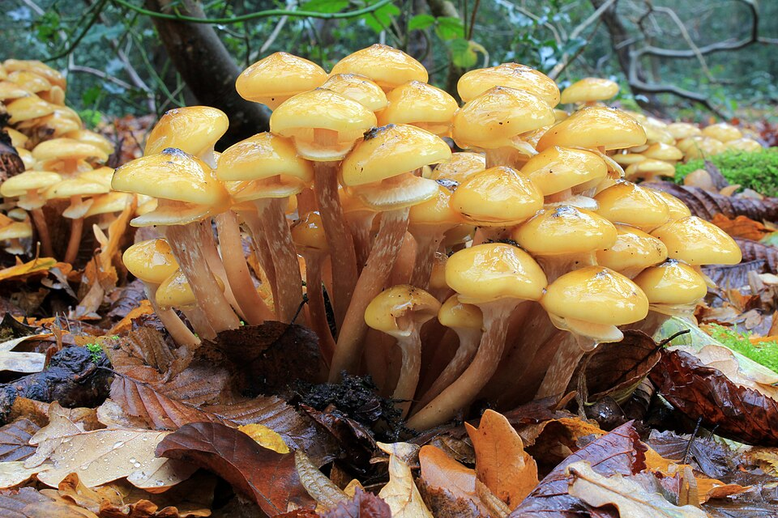
JADALNY
Opieńka miodowa
Armillaria mellea · rodzina drobnołuszczakowate
jadalny ★★tylko gotowane!
| Kapelusz | 3–10 cm, miodowy brąz, łuski ciemniejsze w centrum |
| Blaszki | Białawe→plamiste, pierścień z łuseczkami na trzonie |
| Wzrost | W gęstych kępach przy podstawie drzew i pni |
| Siedlisko | Na martwych i żywych drzewach (pasożyt) |
| Sezon | IX – XI (masowo) |
⚠ KONIECZNIE gotuj min. 20 min i zlej wodę! Surowe i niedogotowane — powodują silne dolegliwości żołądkowe.
⚠ Mylnik: Hełmówka jadowita (Galerina marginata) — rośnie podobnie na drewnie, śmiertelnie trująca. Różnica: opieńka ma łuskowany pierścień, większy kapelusz.
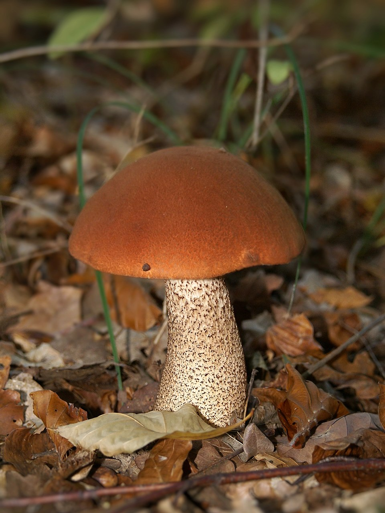
JADALNY
Koźlarz czerwony (czerwieniak)
Leccinum aurantiacum · rodzina borowikowate
jadalny ★★
| Kapelusz | 5–20 cm, pomarańczowo-czerwony, gładki |
| Rurki | Kremowe, po uszkodzeniu szarzeją/czernieją |
| Trzon | Biały z ciemnymi łuseczkami (charakterystyczne!) |
| Miąższ | Biały, mocno sinieje/czernieje po przecięciu |
| Siedlisko | Pod topolami i osikami (obowiązkowo!) |
| Sezon | VII – X |
💡 Czernienie po przecięciu — normalne, nie psuje smaku. Zawsze rośnie pod osiką lub topolą.
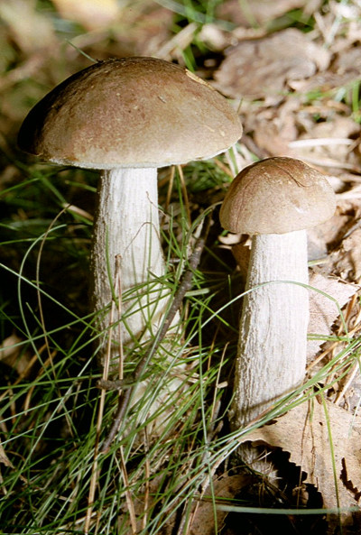
JADALNY
Koźlarz babka (szary)
Leccinum scabrum · rodzina borowikowate
jadalny ★★
| Kapelusz | 5–15 cm, szarobrązowy, gładki |
| Rurki | Kremowe, drobne pory |
| Trzon | Szary z ciemnymi łuseczkami — jak babka |
| Siedlisko | Pod brzozami (obowiązkowo!) |
| Sezon | VI – X |
💡 Trzon bywa gąbczasty — wyciąć przy starszych. Smak delikatny, dobry do zup i sosów.
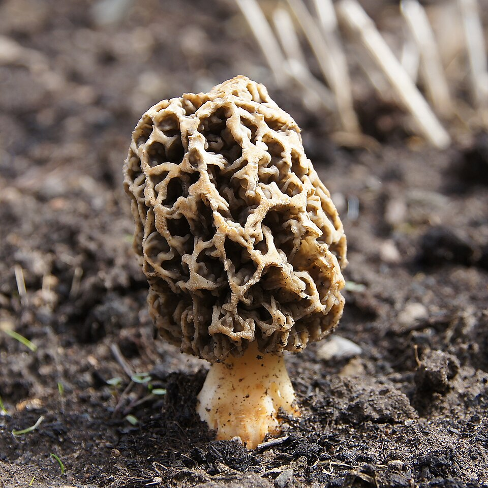
JADALNY
Smardz stożkowaty / jadalny
Morchella conica / M. esculenta · rodzina smardzokowate
jadalny ★★★tylko gotowane!chroniony
| Kapelusz | Stożkowaty/jajowaty, siatkowaty (plastry miodu), brązowy |
| Trzon | Biały/kremowy, wewnątrz pusty |
| Siedlisko | Sady, lasy liściaste, skraje lasów, wiosną! |
| Sezon | III – V (wiosna, pierwszy!) |
⚠ Surowy toksyczny! Gotuj minimum 10 min i zlej wodę. Chroniony — zbieraj z umiarem.
⚠ Mylnik: Piestrzenica kasztanowata (Gyromitra esculenta) — mózgowata, nie siatkowata, fałdkowata. Trująca surowa i po niedogotowaniu.
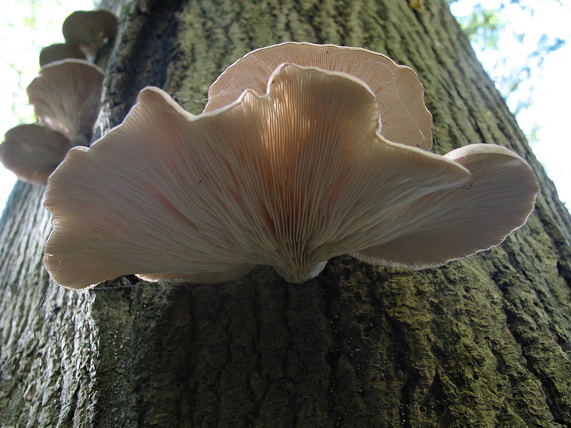
JADALNY
Boczniak ostrygowaty
Pleurotus ostreatus · rodzina boczniakowe
jadalny ★★★sklep/las
| Kapelusz | 5–20 cm, szary do brązowego, muszlowaty, jednostronny |
| Blaszki | Zbiegające, białe, zbiegają na skrócony trzon |
| Wzrost | Na martwym drewnie (buk, topola, wierzba) |
| Zapach | Anyżowy, delikatny |
| Sezon | X – III (jesień i zima!) |
💡 Jeden z niewielu grzybów rosnących zimą. Identyczny z kupowanym w sklepach. Świetny do smażenia i duszenia.
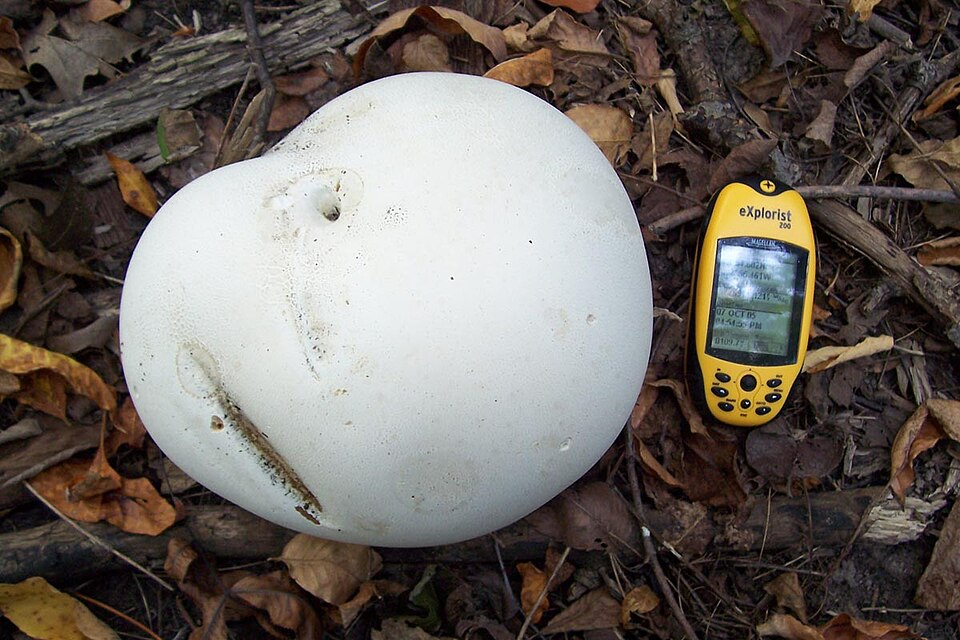
JADALNY
Purchawka olbrzymia
Calvatia gigantea · rodzina purchawkowate
jadalny ★★tylko biały miąższ
| Owocnik | 10–60 cm! Biała, kulista „piłka" |
| Miąższ | Biały jak ser — tylko gdy CZYSTO BIAŁY! |
| Siedlisko | Łąki, pastwiska, skraje lasów |
| Sezon | VII – X |
⚠ Jadalna TYLKO gdy miąższ w środku jest czysto biały i jednolity. Żółty, zielony lub zbrązowiały = niejadalny. KONIECZNIE przekroić przed zjedzeniem!
⚠ Mylnik: Muchomor jajowaty (Amanita ovoidea) — na zewnątrz podobny biały, ale po przekrojeniu widać zarys kapelusza i trzonu. ŚMIERTELNY.
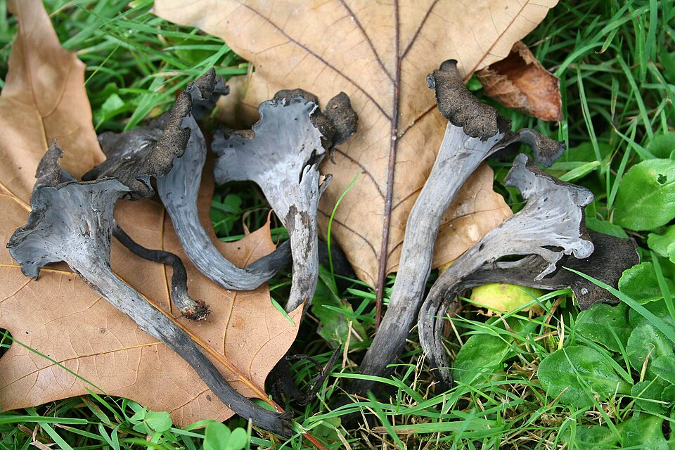
JADALNY
Lejkowiec dęty (trąba śmierci)
Craterellus cornucopioides · rodzina pieprznikowate
jadalny ★★★delikates
| Owocnik | 4–12 cm, lejkowaty/trąbkowaty, czarny do szarego |
| Powierzchnia | Zewnątrz szara, gładka (brak blaszek!) |
| Zapach | Intensywny, owocowy, truflopodobny |
| Siedlisko | Lasy liściaste, pod bukami i dębami |
| Sezon | VIII – XI |
💡 Mimo groźnej nazwy — wybitny delikates! Czarny kolor utrzymuje się po suszeniu. Doskonały do sosów i rysa. Brak trujących mylników!
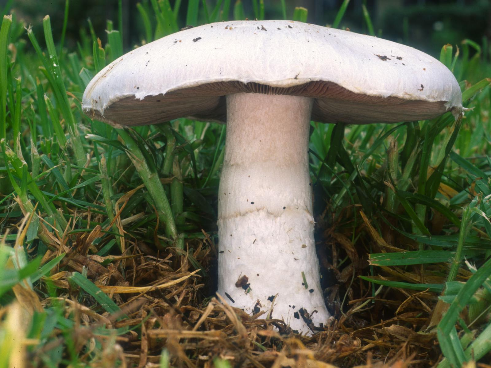
JADALNY
Pieczarka polna
Agaricus campestris · rodzina pieczarkowate
jadalny ★★★
| Kapelusz | 5–12 cm, biały, gładki lub włókienkowaty |
| Blaszki | Różowe→ciemnobrązowe (dojrzałe). NIE białe! |
| Zapach | Pieczarkowaty, grzybowy, przyjemny |
| Siedlisko | Łąki, pastwiska, ogrody, skraje lasów |
| Sezon | VI – X |
⚠ NIGDY nie zbieraj białych pieczarkowatych w lesie — mylna z muchomorem sromotnikowym! Pieczarka polna rośnie na łąkach, ma różowe blaszki.
⚠ Mylnik: Muchomor sromotnikowy — biały, ma pochewkę u podstawy, białe blaszki przez całe życie. ŚMIERTELNY.
Warunkowo jadalne — tylko po odpowiedniej obróbce
Grzyby jadalne, ale wymagające specjalnego przygotowania — gotowania, blanszowania lub suszenia. Surowe mogą być toksyczne.
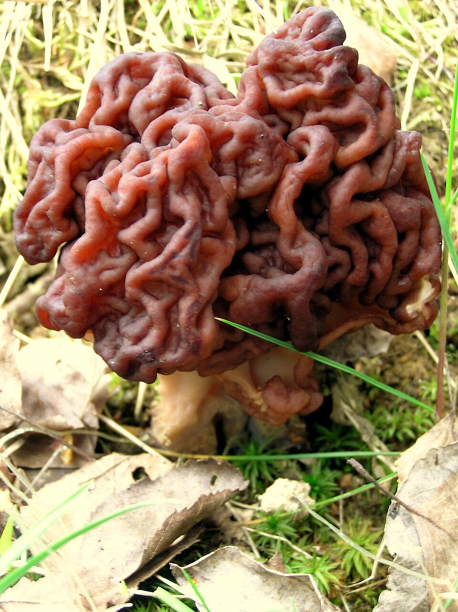
OSTROŻNIE
Piestrzenica kasztanowata (fałszywy smardz)
Gyromitra esculenta · rodzina piestrzenicowate
warunkowo ⚠gyromitrin
| Kapelusz | Brązowy, fałdkowaty jak mózg (NIE siatkowaty jak smardz) |
| Trzon | Biały, karbowany, pusty |
| Siedlisko | Lasy iglaste, wiosną (IV–V) |
| Toksyna | Gyromitrin — konwertuje do hydrazyny (rakotwórczej) |
⚠ W wielu krajach UE zakazana do sprzedaży. Gotuj dwukrotnie, wylewając wodę. NIE suszyć w domu bez wentylacji — opary toksyczne. Dzieci i kobiety w ciąży — całkowity zakaz.
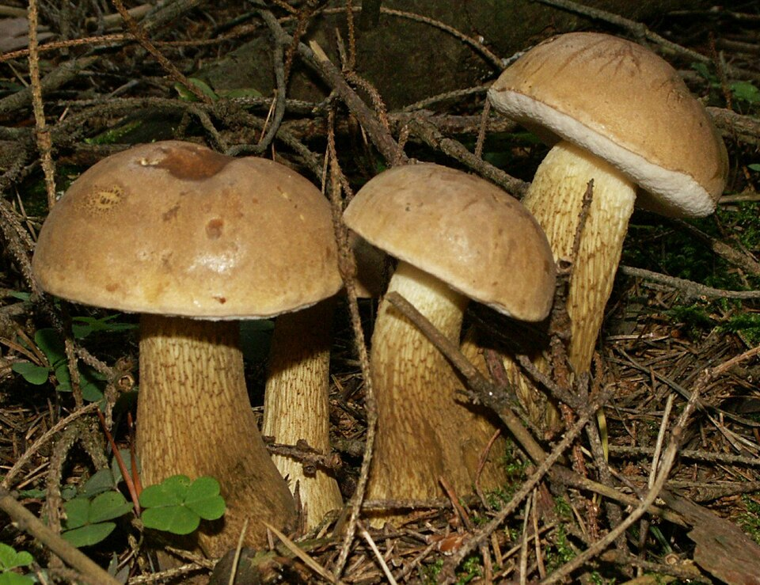
NIEJADALNY
Goryczak żółciowy (fałszywy borowik)
Tylopilus felleus · rodzina borowikowate
niejadalny
| Kapelusz | Brązowy, podobny do borowika |
| Rurki | RÓŻOWE (kluczowe!) — u borowika białe/żółte |
| Siateczka | Ciemna na jasnym tle (u borowika jasna siateczka) |
| Smak | Intensywnie gorzki — nawet ułamek psuje potrawę |
💡 Niebezpieczny bo podobny do borowika, ale nie trujący — tylko niejadalny. Jeden grzyb goryczaka zniszczy cały garnek zupy gorzyczą.
Grzyby trujące i śmiertelnie niebezpieczne
Znajomość tych grzybów jest równie ważna jak znajomość jadalnych. Większość zatruć śmiertelnych w Polsce powodują muchomory.
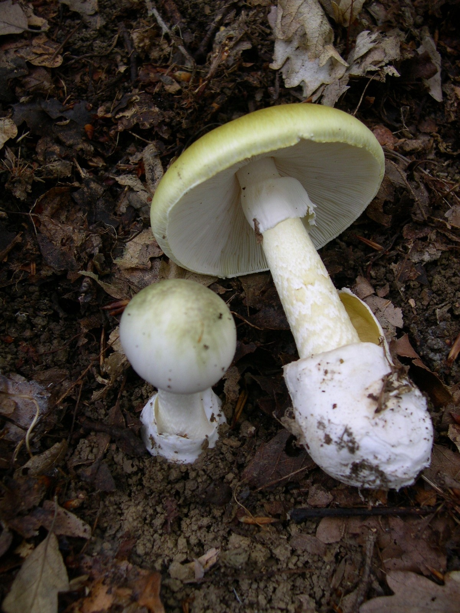
☠ ŚMIERTELNY
Muchomor sromotnikowy (zielony)
Amanita phalloides · rodzina muchomorowate
☠ śmiertelny
| Kapelusz | 6–12 cm, zielonkawy do białego, jedwabisty połysk |
| Blaszki | Białe przez CAŁE życie — nigdy nie różowieją! |
| Pochewka | Biała pochewka (volva) u podstawy — KLUCZOWE |
| Pierścień | Biały zwisający pierścień na trzonie |
| Zapach | Początkowo słodkawy, z wiekiem cuchnący |
| Siedlisko | Lasy liściaste — dąb, buk, grabie |
☠ 50% śmiertelnych zatruć grzybami w Europie. Amatoksyny niszczą wątrobę — objawy dopiero po 6–24 h! Nie ma antidotum. Dawka śmiertelna to 1/3 kapelusza. NIE JEŚĆ, NIE DOTYKAĆ BEZ POTRZEBY.
Mylony z: pieczarką polną (ma różowe blaszki), czubajką kanią (brak pochewki, łuskowany), gołąbkiem (brak pochewki). SPRAWDŹ PODSTAWĘ TRZONU!

☠ ŚMIERTELNY
Muchomor jadowity (niszczyciel)
Amanita virosa / A. verna · rodzina muchomorowate
☠ śmiertelny
| Kapelusz | Czysto biały (cały grzyb!) — nie myli się z zielonym |
| Blaszki | Białe, wolne |
| Pochewka | Duża biała pochewka — KONIECZNIE sprawdź! |
| Siedlisko | Lasy liściaste i iglaste |
☠ Równie śmiertelny jak sromotnikowy. Cały biały — mylony z pieczarką i czubajką. Ta sama toksyna (amatoksyny), ta sama śmierć. Pochewka u podstawy = zawsze trucizna z rodziny Amanita.
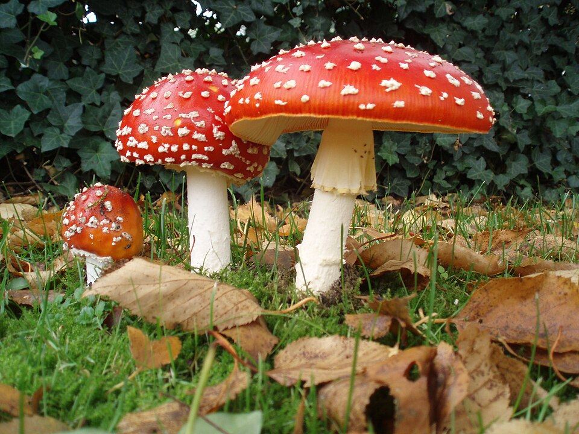
TRUJĄCY
Muchomor czerwony (fly agaric)
Amanita muscaria · rodzina muchomorowate
trującyhalucynogenny
| Kapelusz | 8–20 cm, intensywnie czerwony z białymi brodawkami |
| Blaszki | Białe, wolne |
| Trzon | Biały, z pierścieniem i pochewką |
| Siedlisko | Pod brzozami i sosnami (symboliczne) |
⚠ Toksyny: muscymol + kwas ibotenowy — halucynacje, majaczenie, śpiączka. Rzadko śmiertelny dla dorosłych, ale niebezpieczny. Biały kolor brodawek zmywa deszcz — myląco podobny do pieczarki lub kani!

☠ ŚMIERTELNY
Muchomor plamisty (panterowy)
Amanita pantherina · rodzina muchomorowate
☠ śmiertelny
| Kapelusz | 6–12 cm, brązowy z białymi brodawkami (jak leopard) |
| Blaszki | Białe, wolne |
| Pochewka | Biała, z wałeczkowatymi obwódkami |
| Siedlisko | Lasy mieszane |
⚠ Bardziej trujący niż muchomor czerwony — śmiertelny! Mylony z brązowymi kaniami lub pieczarkami w stadium jaja. Te same toksyny co czerwony, ale wyższe stężenie.
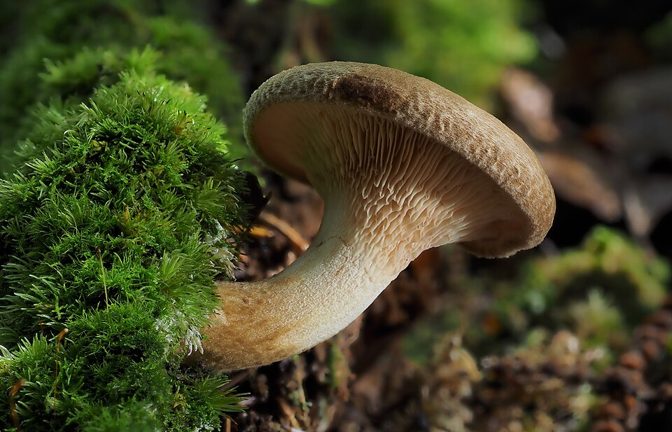
☠ ŚMIERTELNY
Krowiak podwinięty (fałszywy rydz)
Paxillus involutus · rodzina krowickowate
☠ śmiertelny
| Kapelusz | 5–15 cm, brązowawy, brzeg podwinięty do środka! |
| Blaszki | Żółtawe, gęste, zbiegające, łatwo oddzielają się |
| Trzon | Brązowy, krótki, ekscentryczny |
| Siedlisko | Lasy mieszane, pod brzozami |
⚠ Podstępny — przez lata był uważany za jadalny po gotowaniu. Toksyna kumuluje się w organizmie — po latach spożywania powoduje hemolizę (rozpad krwinek) i śmierć z powodu niewydolności nerek. NIE JEŚĆ NIGDY!
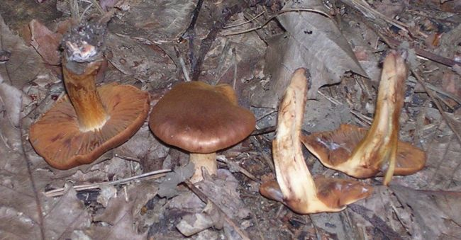
☠ ŚMIERTELNY
Zasłonak rudy (webcap)
Cortinarius orellanus · rodzina zasłonakowate
☠ śmiertelny
| Kapelusz | 4–10 cm, rdzawobrązowy do pomarańczowego |
| Blaszki | Rdzawe, szerokie |
| Zasłona | Pająkowate włókna (pajęczyna) u młodych |
| Siedlisko | Lasy liściaste — pod dębami i bukami |
⚠ WYJĄTKOWO PODSTĘPNY — objawy pojawiają się dopiero po 3–21 dniach! Orellanus niszczy nerki nieodwracalnie — przeszczep nerki lub śmierć. Mylony z lisówką i boczniakowniem. Nigdy nie smakuj nieznanych brązowych grzybów.
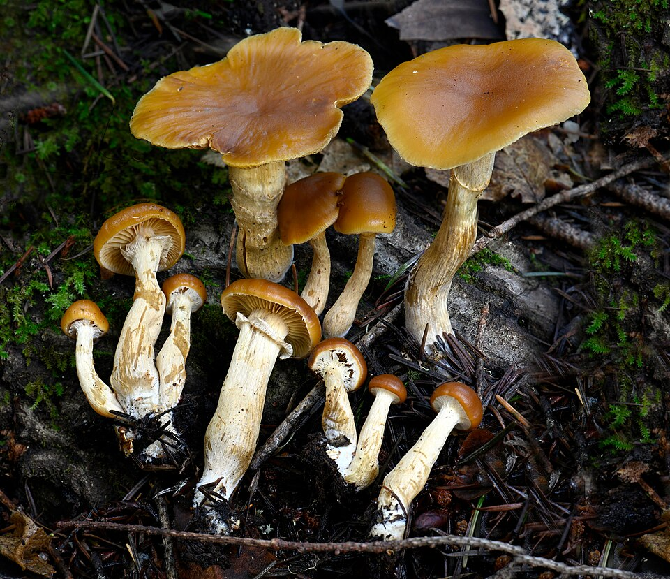
☠ ŚMIERTELNA
Hełmówka trująca (deadly skullcap)
Galerina marginata · rodzina zasłonakowate
☠ śmiertelna
| Kapelusz | 2–5 cm, miodowo-brązowy, gładki |
| Blaszki | Brązowe, wąskie |
| Wzrost | W kępach na martwym drewnie |
| Toksyna | Amatoksyny — ta sama co sromotnikowy! |
⚠ Mylona z opieńką miodową — obie rosną w kępach na drewnie! Różnica: opieńka jest większa, ma łuskowaty pierścień i łuski na kapeluszu. Hełmówka: mała, gładka, gładki pierścień (często zanika).

TRUJĄCY
Borowik szatański (szatan)
Rubroboletus satanas · rodzina borowikowate
silnie trujący
| Kapelusz | 10–25 cm, białawy do szarego, masywny |
| Rurki | CZERWONE lub pomarańczowoczerwone (kluczowe!) |
| Trzon | Grubawa beczułka z czerwoną siateczką |
| Sinieje | Intensywnie i natychmiastowo po przecięciu |
| Zapach | Dojrzały — nieprzyjemny (padlina) |
⚠ Czerwone pory + sinienie = ZAWSZE unikaj. Powoduje intensywne wymioty i biegunki. Rzadko śmiertelny, ale dolegliwości bardzo poważne. Reguła: czerwone pory u borowika = trucizna.
Przewodnik identyfikacji — na co patrzeć
🔬 Kluczowe cechy do sprawdzenia przy każdym grzybie
Pochewka (volva)
Biała torebka u podstawy = Amanita = NIEBEZPIECZEŃSTWO. Odkopaj podstawę trzonu!
Kolor blaszek/rurek
Białe blaszki przez całe życie = podejrzane. Różowe/brązowe = pieczarka. Czerwone rurki = borowik trujący.
Sinieje po przecięciu?
Podgrzybek: sinieje — jadalny. Borowik: NIE sinieje — jadalny. Borowik szatański: sinieje + czerwone pory = trujący.
Mleczko
Pomarańczowe = rydz (jadalny). Białe gorzkie = gołąbek pieprzowy (niejadalny). Białe łagodne = mleczaj (gatunki różne).
Drzewo gospodarz
Koźlarz czerwony = TYLKO pod osiką. Koźlarz babka = TYLKO pod brzozą. Rydz = sosna/świerk. Maślak = TYLKO sosna.
Pierścień na trzonie
Ruchomy pierścień kani = łatwy do przesunięcia. Pierścień sromotnikowego = delikatny. Brak pierścienia + pochewka = bardzo podejrzane.
Fałdki vs blaszki
Kurka = FAŁDKI (rozwidlone, twarde). Lisówka trująca = blaszki (cienkie, oddzielne). Kluczowa różnica!
Wzrost w kępach
Na drewnie w kępach: opieńka (duże, łuskowate) vs hełmówka (małe, gładkie). ZAWSZE sprawdzaj rozmiar i pierścień!
⚠️ Najgroźniejsze pary mylne w Polsce
| Grzyb jadalny | ☠ Mylnik trujący | Jak rozróżnić |
|---|---|---|
| Pieczarka polna | Muchomor sromotnikowy | Pieczarka ma różowe blaszki + rośnie na łące. Sromotnik: białe blaszki, pochewka u podstawy, las. |
| Opieńka miodowa | Hełmówka trująca | Opieńka: większa, pierścień łuskowany, łuski na kapeluszu. Hełmówka: mała (2–5 cm), gładka, gładki pierścień. |
| Kurka (pieprznik) | Lisówka pomarańczowa | Kurka: FAŁDKI, owocowy zapach, rośnie samotnie. Lisówka: blaszki, rośnie w kępach przy pniu. |
| Borowik szlachetny | Goryczak żółciowy | Borowik: białe/żółte rurki, orzechowy zapach. Goryczak: różowe rurki, gorzki smak. |
| Rydz | Krowiak podwinięty | Rydz: pomarańczowe mleczko, blaszki. Krowiak: BRAK mleczka, podwinięty brzeg kapelusza, blaszki łatwo oddzielalne. |
| Smardz jadalny | Piestrzenica kasztanowata | Smardz: siatkowaty jak plastry miodu, regularny. Piestrzenica: mózgowaty, nieregularny, fałdkowaty. |
| Purchawka olbrzymia | Muchomor w stadium jaja | Purchawka: biała kula bez trzonu, miąższ jednolicie biały. Jajo muchomora: po przekrojeniu widać zarys grzyba w środku. |
| Czubajka kania | Muchomor czerwony (stary) | Kania: brązowe łuski, ruchomy pierścień, brak pochewki. Muchomor: pochewka u podstawy, inny wzór łusek. |